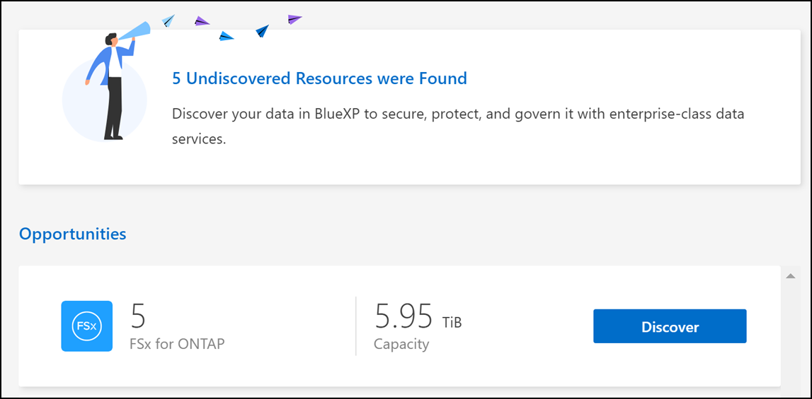

시작하십시오
시작하십시오
FSx for ONTAP 작업 환경을 만들거나 검색합니다
 변경 제안
변경 제안
BlueXP를 사용하면 ONTAP 작업 환경을 위한 FSx를 생성하거나 검색하여 볼륨 및 추가 데이터 서비스를 추가 및 관리할 수 있습니다.
ONTAP 작업 환경을 위한 FSx를 생성합니다
첫 번째 단계는 ONTAP 작업 환경에 대한 FSx를 생성하는 것입니다. AWS 관리 콘솔에서 ONTAP용 FSx 파일 시스템을 이미 생성한 경우 를 사용할 수 있습니다 "BlueXP를 사용하여 검색합니다".
BlueXP에서 ONTAP 작업 환경을 위한 FSx를 생성하기 전에 다음이 필요합니다.
-
ONTAP 작업 환경을 위한 FSx를 생성하는 데 필요한 권한을 BlueXP에 제공하는 IAM 역할의 ARN입니다. 을 참조하십시오 "BlueXP에 AWS 자격 증명 추가" 를 참조하십시오.
-
ONTAP용 FSx 인스턴스를 생성할 지역 및 VPN 정보
-
BlueXP에서 새 작업 환경을 추가하고 * Amazon Web Services * 를 선택한 후 * Add new * for Amazon FSx for NetApp ONTAP 를 클릭합니다.

-
ONTAP 인증 * 용 * FSx
-
계정에 ONTAP용 FSx에 대한 올바른 AWS 권한이 있는 기존 IAM 역할이 있는 경우 드롭다운에서 해당 역할을 선택합니다.
-
사용자 계정에 IAM 역할이 없는 경우 * 자격 증명 * 을 클릭하고 마법사의 단계에 따라 ONTAP 자격 증명을 위한 FSx와 함께 AWS IAM 역할에 대한 ARN을 추가합니다. 을 참조하십시오 "BlueXP에 AWS 자격 증명 추가" 를 참조하십시오.
-
-
* 세부 정보 및 자격 증명 *
-
사용할 작업 환경 이름을 입력합니다.
-
또는 더하기 기호를 클릭하고 태그 이름과 값을 입력하여 태그를 만들 수도 있습니다.
-
선택적으로 FSx for ONTAP이 주간 유지 관리를 30분 수행하기 위한 시작 시간을 지정할 수 있습니다. 이는 유지 관리가 중요한 업무 활동과 일치하지 않도록 하기 위해 사용할 수 있습니다. 선호 사항 없음 * 을 선택하면 임의 시작 시간이 할당됩니다. 언제든지 변경할 수 있습니다.
-
사용할 ONTAP 클러스터 암호를 입력하고 확인합니다.
-
필요한 경우 SVM 사용자에 대해 동일한 암호를 사용하고 다른 암호를 설정하는 옵션을 선택 취소합니다.
-
-
* HA 구축 모델 *
-
단일 가용성 영역 * 또는 * 다중 가용성 영역 * HA 배포 모델을 선택합니다. 여러 가용성 영역의 경우 각 노드가 전용 가용성 영역에 있도록 두 개 이상의 가용성 영역에서 서브넷을 선택합니다.
-
파일 시스템에 연결할 VPC(가상 프라이빗 클라우드)를 선택합니다.
-
기존 보안 그룹을 사용하거나 * 생성된 보안 그룹 * 을 선택하여 BlueXP가 선택한 VPC 내의 트래픽만 허용하는 보안 그룹을 생성할 수 있도록 합니다.

"AWS 보안 그룹" 인바운드 및 아웃바운드 트래픽을 제어합니다. 이러한 항목은 AWS 관리자가 구성하며 에 연결됩니다 "AWS의 탄력적인 네트워크 인터페이스(ENI)".
-
-
* 부동 IP * (다중 가용성 영역만 해당)
사용 가능한 범위를 자동으로 설정하려면 _CIDR 범위_를 비워 두십시오. 선택적으로 를 사용할 수 있습니다 "AWS Transit Gateway를 참조하십시오" 범위를 수동으로 구성합니다.
 다음 범위의 IPS는 지원되지 않습니다.
다음 범위의 IPS는 지원되지 않습니다.-
0.0.0.0/8
-
127.0.0.0/8
-
198.19.0.0/20
-
224.0.0.0/4
-
240.0.0.0/4
-
255.255.255.255/32
-
-
* 경로 테이블 * (여러 가용성 영역만 해당)
부동 IP 주소에 대한 라우트가 포함된 라우팅 테이블을 선택합니다. VPC(주 경로 테이블)에 있는 서브넷에 대해 하나의 라우팅 테이블만 있는 경우 BlueXP는 해당 라우팅 테이블에 부동 IP 주소를 자동으로 추가합니다.
-
* 데이터 암호화 *
기본 AWS 마스터 키를 수락하거나 * 키 변경 * 을 클릭하여 다른 AWS CMK(Customer Master Key)를 선택합니다. CMK에 대한 자세한 내용은 을 참조하십시오 "AWS KMS 설정".
-
* 스토리지 구성 *
-
처리량, 용량 및 단위를 선택합니다. 처리량, 스토리지 용량, IOPS는 언제든지 변경할 수 있습니다.
-
선택적으로 IOPS 값을 지정할 수 있습니다. IOPS 값을 지정하지 않으면 BlueXP는 입력된 총 용량의 3GiB당 IOPS를 기준으로 기본값을 설정합니다. 예를 들어, 총 용량에 대해 2000GiB를 입력하고 IOPS 값이 없으면 유효 IOPS 값은 6000으로 설정됩니다. IOPS 값은 언제든지 변경할 수 있습니다.
최소 요구 사항을 충족하지 않는 IOPS 값을 지정하면 작업 환경을 추가할 때 오류가 발생합니다.
-
-
* 검토 *
-
탭을 클릭하여 ONTAP 속성, 공급자 속성 및 네트워킹 구성을 검토합니다.
-
설정을 변경하려면 * Previous * (이전 *)를 클릭하고 설정을 적용하고 작업 환경을 만들려면 * Add * (추가 *)를 클릭합니다.
-
BlueXP는 Canvas에 ONTAP용 FSx 구성을 표시합니다. 이제 BlueXP를 사용하여 ONTAP 작업 환경의 FSx에 볼륨을 추가할 수 있습니다.

ONTAP 파일 시스템용 기존 FSx를 검색합니다
이전에 BlueXP에 AWS 자격 증명을 제공한 경우 * My Estate * 는 자동으로 ONTAP 파일 시스템용 FSx를 검색하고 제안하여 BlueXP를 사용하여 추가 및 관리할 수 있습니다. 사용 가능한 데이터 서비스를 검토할 수도 있습니다.
ONTAP 파일 시스템용 FSx를 검색할 수 있습니다 ONTAP 작업 환경을 위한 FSx를 생성합니다 또는 * 내 부동산 * 페이지를 사용합니다. 이 작업에서는 * 내 부동산 * 을 사용한 검색에 대해 설명합니다
-
BlueXP에서 * 내 부동산 * 탭을 클릭합니다.
-
ONTAP 파일 시스템에 대해 검색된 FSx의 수가 표시됩니다. 검색 * 을 클릭합니다.

-
하나 이상의 파일 시스템을 선택하고 * Discover * 를 클릭하여 Canvas에 추가합니다.
|
|
|
BlueXP는 검색된 ONTAP 파일 시스템용 FSx를 Canvas에 표시합니다. 이제 BlueXP를 사용하여 ONTAP 작업 환경의 FSx에 볼륨을 추가할 수 있습니다.